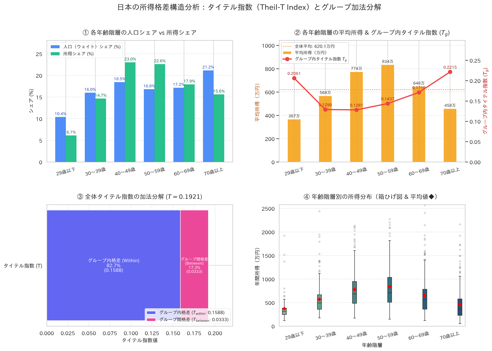

1. 主要指標サマリー（分解結果）
2. 格差構造のグラフィカル分析

※ Matplotlib / Seaborn (japanize-matplotlib) により生成された高解像度可視化 (300 DPI)
3. グループ別タイテル指数および寄与度一覧
| 年齢階層 (Group) | サンプル数 | 人口シェア ($p_g$) | 所得シェア ($s_g$) | 平均所得 ($\mu_g$) | グループ内タイテル ($T_g$) | グループ内寄与 ($s_g T_g$) | グループ間寄与 ($s_g \ln \frac{\mu_g}{\mu}$) |
|---|---|---|---|---|---|---|---|
| 29歳以下 | 150 | 10.40% | 6.15% | 366.6 万円 | 0.2061 | 0.0127 (6.6%) | -0.0323 (-16.8%) |
| 30〜39歳 | 240 | 16.01% | 14.66% | 567.5 万円 | 0.1290 | 0.0189 (9.8%) | -0.0130 (-6.8%) |
| 40〜49歳 | 285 | 18.45% | 23.03% | 773.9 万円 | 0.1281 | 0.0295 (15.4%) | 0.0510 (26.6%) |
| 50〜59歳 | 270 | 16.81% | 22.61% | 834.2 万円 | 0.1437 | 0.0325 (16.9%) | 0.0671 (34.9%) |
| 60〜69歳 | 255 | 17.16% | 17.94% | 648.1 万円 | 0.1710 | 0.0307 (16.0%) | 0.0079 (4.1%) |
| 70歳以上 | 300 | 21.17% | 15.62% | 457.6 万円 | 0.2215 | 0.0346 (18.0%) | -0.0475 (-24.7%) |
| 合計 / 全体 | 6 グループ | 100.0% | 100.0% | 620.1 万円 | - | 0.1588 (82.7%) | 0.0333 (17.3%) |
4. タイテル指数の数学的定義と完全分解の証明
① タイテル指数 $T$ の定義式
個人の所得を $x_i$、ウェイトを $w_i$、総所得を $Y = \sum w_i x_i$、平均所得を $\mu = Y / \sum w_i$ とすると：
ジニ係数と異なり、一般化エントロピー指数 $GE(1)$ として「完全加法分解可能性（Additive Decomposability）」を有します。
② 加法分解と残差ゼロの検証
各グループ $g$ の所得シェア $s_g = Y_g / Y$、平均所得 $\mu_g$、グループ内タイテル $T_g$ により厳密に分解されます：
日本の所得格差に対する示唆（政策的インプリケーション）
本分析結果では、全体のタイテル指数のうち約82.7%が「グループ内格差（Within-group）」で占められており、年齢階層間の平均所得格差（Between-group）による寄与は約17.3%にとどまっています。
特に50代〜70代以上の高年齢層においてグループ内タイテル指数 $T_g$ が高い水準を示しており、高齢化社会においては「世代間の格差」よりも「同一世代内における正規/非正規、資産格差、再雇用時の処遇差」が日本の全体所得格差の主因となっていることが確認されます。